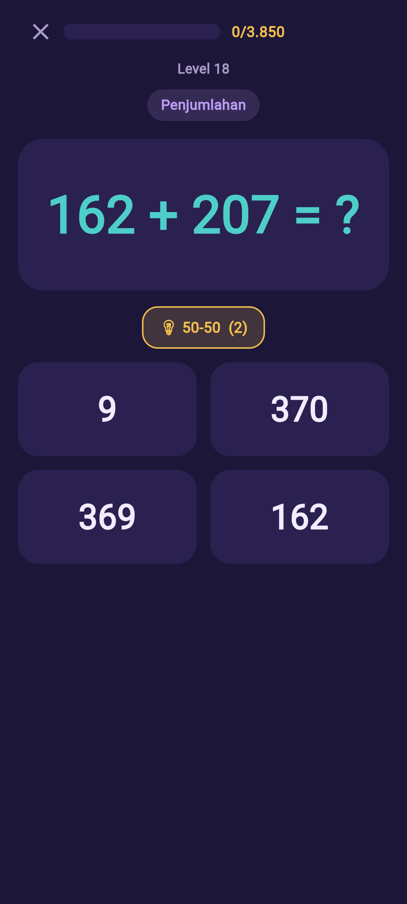
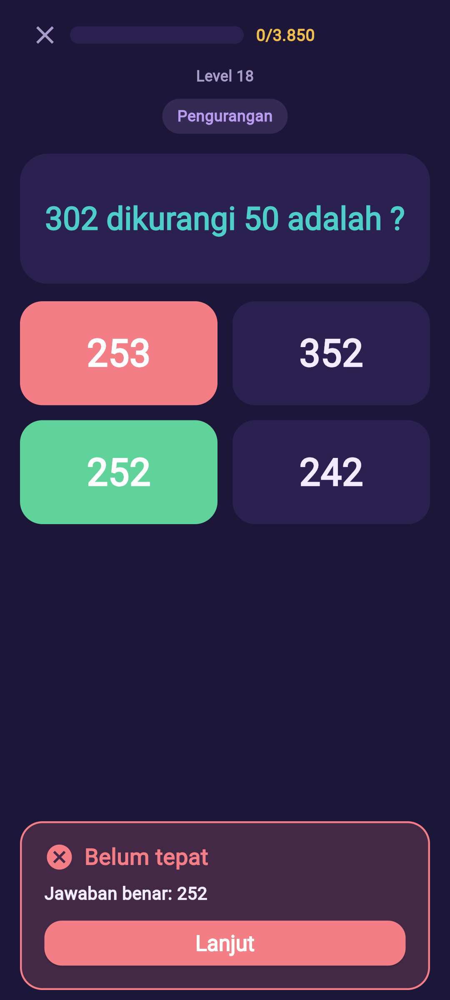
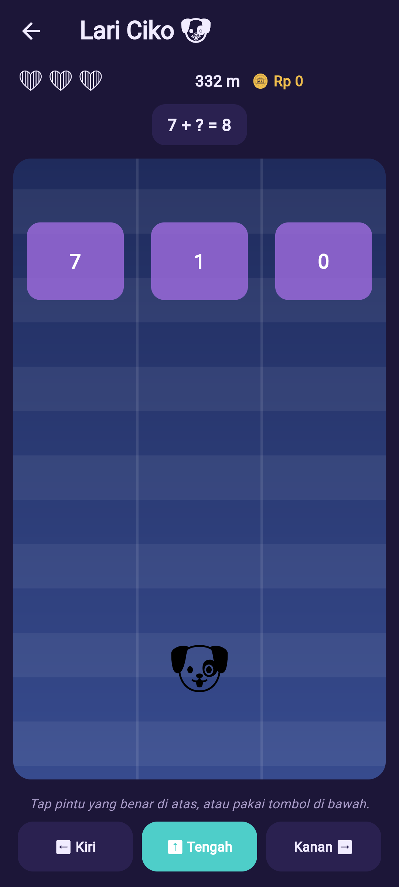
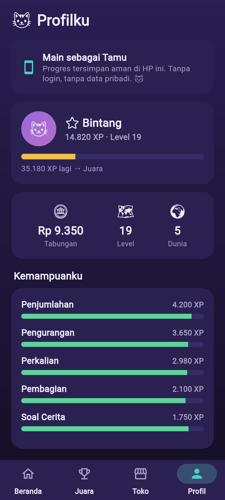

AyoMath adalah aplikasi latihan matematika untuk anak SD Kelas 1–6 di Indonesia.
Dirancang sebagai proyek sosial: gratis, tanpa iklan, dan bisa dipakai
tanpa internet — agar bisa dipakai di mana saja, termasuk di daerah dengan
jaringan terbatas.
📚Sesuai Kurikulum MerdekaKelas 1–6, dari berhitung dasar sampai pecahan, desimal, geometri, dan soal cerita bertingkat.
📶Bekerja offlineProgres belajar tersimpan di HP. Tidak butuh akun, tidak butuh kuota.
🛡️Aman & menghormati privasiTanpa iklan, tanpa pelacak, tanpa data pribadi anak. Ada batas waktu bermain & Area Orang Tua.
⭐Belajar nilai baikSetiap petualangan menyelipkan nilai: kebersihan, kejujuran, hormat, dan kebaikan hati.
Mode & Fitur
Lebih dari sekadar latihan. AyoMath punya banyak mode — dan semua mulai dari yang mudah, lalu makin menantang seiring kemampuan anak bertambah, jadi selalu pas dengan levelnya.
🚀PetualanganJalur belajar utama tanpa batas. Anak naik level dan menjelajah Dunia demi Dunia; soal bertambah sulit secara bertahap mengikuti kemajuannya. Kumpulkan XP & stiker koleksi.
🪐Belajar per KelasPilih Kelas 1–6 dan latih topik tertentu — penjumlahan, pengurangan, perkalian, pembagian, pecahan, desimal, geometri, sampai soal cerita.
🎲Permainan AsikGame singkat yang mengasah logika & ketelitian: Pilah Sampah, Lari Ciko, Tangram, Sudoku Anak, Lukis Angka, dan Warung Oren. Tingkat kesulitannya naik saat anak makin mahir.
⚡Mode CepatLatih kecepatan berhitung di luar kepala. Target waktunya makin ketat untuk melatih kelancaran (fluency).
🧠Mode Jenius — bertaraf internasionalSoal penalaran mendalam & non-rutin per kelas, dipatok (benchmark) ke standar Singapura & Korea — negara dengan prestasi matematika terbaik dunia. Memakai model bar, langkah bertingkat, dan berpikir mundur; kesulitannya terus meningkat. Raih Bintang Jenius ⭐ tanpa memengaruhi progres utama.
🏆Papan JuaraAdu XP dengan teman sekelas, se-provinsi, dan seluruh Indonesia. Tanpa nama asli — tetap aman & privat.
🛍️Toko & ProfilBelanja topi & teman hewan dengan koin hasil bermain, lalu pantau kemampuan, level, dan pangkat anak di Profil.
📈Tumbuh bersama anakTidak ada mode yang “terlalu mudah” untuk selamanya. Dari berhitung dasar sampai penalaran ala Singapura/Korea di Mode Jenius, tingkat kesulitan naik bertahap — menantang tanpa membuat anak menyerah.
Lihat AyoMath
Belajar jadi petualangan seru — naik level, soal pilihan ganda, koreksi yang lembut, dan banyak permainan asik.






🪙 Koin (Rp) di dalam game hanya didapat dengan bermain — bukan uang asli, dan tidak ada pembelian dalam aplikasi.
🤝Mendukung guru IndonesiaAyoMath mendukung IOA (ioa.or.id) dalam meningkatkan kompetensi guru di Indonesia — termasuk pelatihan kepemimpinan transformasional bagi para guru.